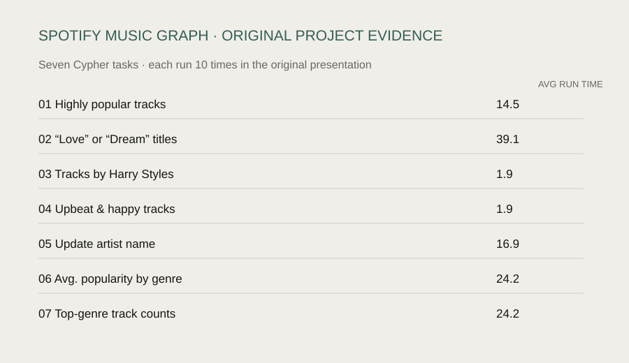

- Cypher query tasks
- 7
- runtime trials per query
- 10
- entity types
- 4
My contribution
I carried out the majority of the project work: preparing data in Python, organizing track, artist, album, and genre records for Neo4j, designing PERFORMED_BY, BELONGS_TO, and HAS_GENRE relationships, and analyzing the graph through seven Cypher query tasks.
Queries and evidence
Queries explored popular tracks, title keywords, specific artists, upbeat/happy tracks, average popularity by genre, and top-genre counts. Repeating each query ten times documented runtime under the project setup.

Open full size ↗The question
How can a graph model make relationships in music data easier to explore than a flat table?
From records to relationships
Duplicate track IDs and multiple artists in one field required preparation before import. Tracks, artists, albums, and genres became separate entities connected by PERFORMED_BY, BELONGS_TO, and HAS_GENRE relationships.
Inspect a documented Cypher query
MATCH (t:Track)-[:HAS_GENRE]->(g:Genre)
RETURN g.name AS genre_name,
AVG(t.popularity) AS avg_popularity
ORDER BY avg_popularity DESC;
Task 6, transcribed from the original presentation and preserved in the public query file. This example groups track popularity by linked genre; it does not measure listening demand.
Documentation and limits
The repository preserves the original presentation and Cypher queries transcribed from screenshots. The original Python scripts and CSV files are unavailable, so it documents the workflow rather than providing a complete reproducible pipeline. Runtime measurements are not a SQL comparison or a production-scale benchmark.
Analysis workflow
View the three steps
- Prepare Handle duplicate track IDs and split records with multiple artists.
- Model Organize four entity types and define their relationships in Neo4j.
- Query Explore seven query tasks and document repeated runtime trials.
Why this work matters
Cleaning identifiers, splitting multi-value fields, and defining entity relationships are transferable to operational datasets. These methods help analysts avoid duplicated entities and inconsistent relationships in operational reporting.